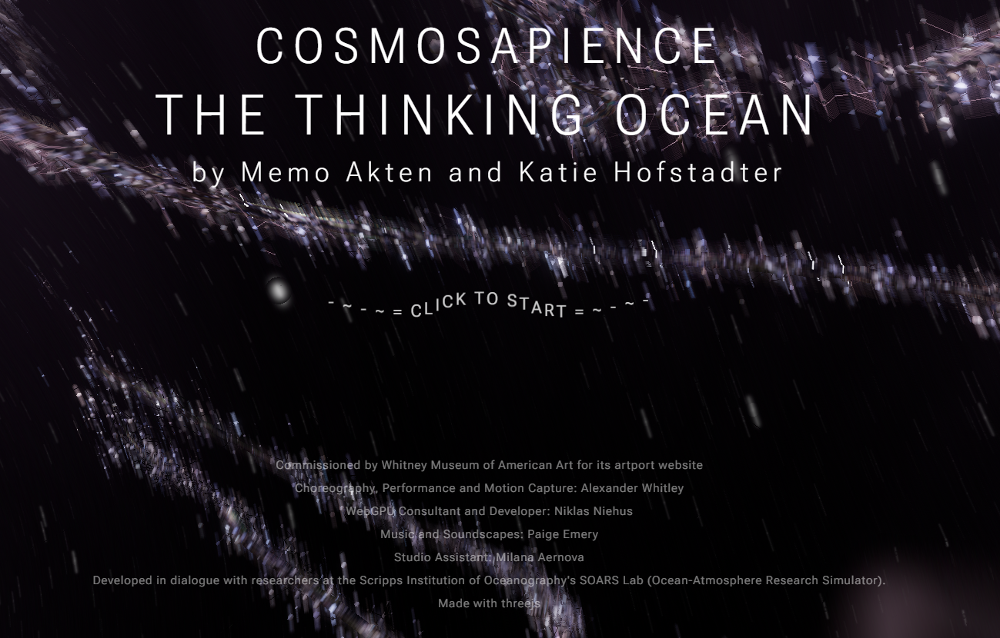
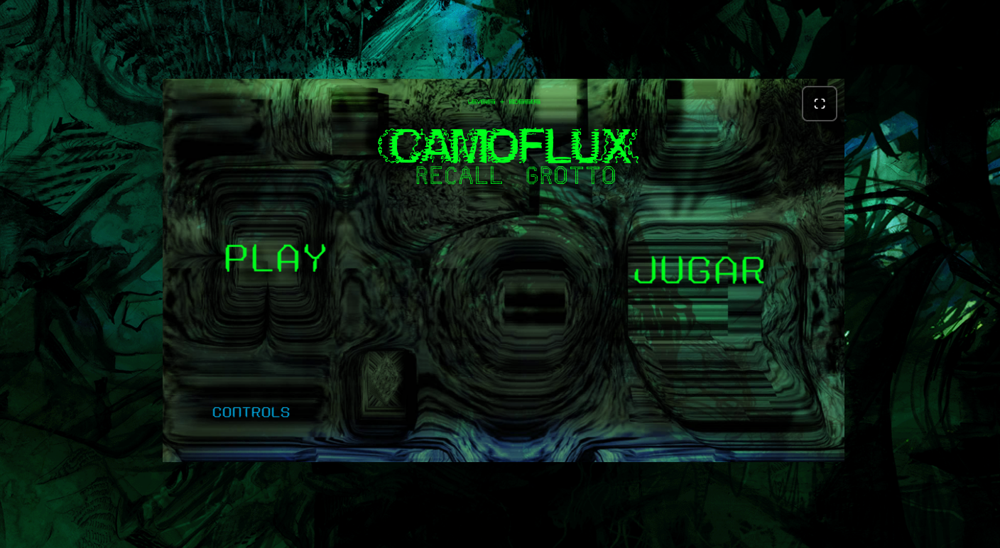
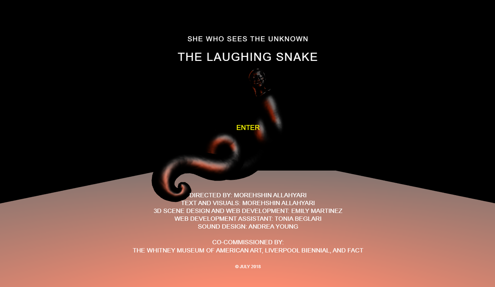

The Thinking Ocean
A 3D fluid simulation exploring planetary consciousness, bio-signals, and oceanic intelligence, developed in dialogue with atmospheric and oceanographic researchers.
Whitney Artport • Online Exhibition
Curated by Nishant Yajnik
Hosted on the Whitney Museum’s artport, 3d Art: Exploration and Interaction in the Net Art Space brings together three browser commissions that invites users to explore and engage with the works to learn more about technology, nature, and myths. Rather than treating the web browser as a transparent document reader, these artists build dense virtual worlds that immerses the visitor completely.
In Memo Akten and Katie Hofstadter’s The Thinking Ocean (2026), dynamic fluid simulations and choreographic motion data converge to imagine an oceanic consciousness in perpetual dialogue with environmental research. Leo Castañeda’s Camoflux Recall Grotto (2026) submerges the visitor inside a 3D speculative aquatic ecosystem where game mechanics and camouflage aesthetics question ecological adaptation and digital survival. In contrast, Morehshin Allahyari’s The Laughing Snake (2018)—part of her She Who Sees the Unknown series—resurrects a mythic female jinn through an interactive 3D hyper narrative fiction and soundscape, using Middle Eastern mythologies against modern stories of patriarchal power. Across oceanic simulation, virtual grottoes, and mythic reclamation, these works transform the web interface into an uncanny place of exploration, interaction and immersive storytelling and discovery.

A 3D fluid simulation exploring planetary consciousness, bio-signals, and oceanic intelligence, developed in dialogue with atmospheric and oceanographic researchers.

An interactive 3D underwater simulation and speculative grotto using video game aesthetics and camouflage textures to explore non-human environments and natural survival.

An interactive net installation and 3D narrative resurrecting a female mythic figure from Middle Eastern lore to examine misogyny and patriarchal power structures.